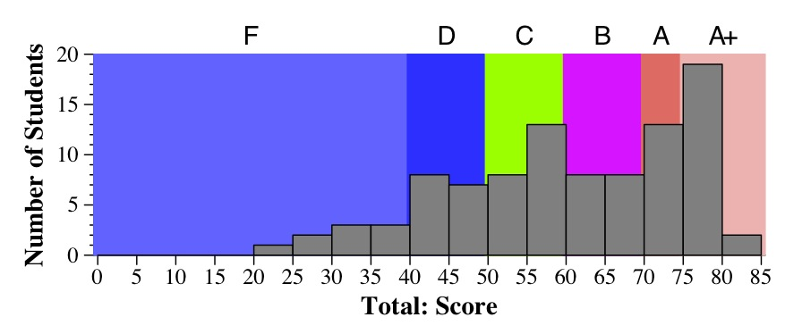
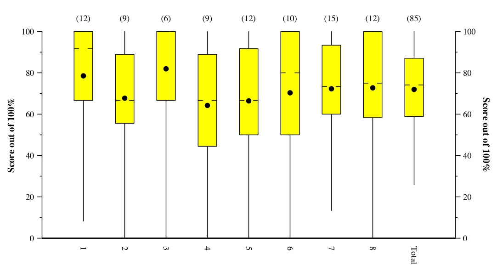

CS140 Midterm Exam: Spring, 2014
Scores
This was a straightforward exam -- no tricks. Here's the mapping of exam scores to grades:
- 75 - 85: A+
- 70 - 75: A
- 60 - 70: B
- 50 - 60: C
- 40 - 50: D
- Below 40: F

Please see My final grading guide for CS302 for description of
how the midterm affects the final grade. In particular, with this midterm,
I will consider the top grade to be 80 (so some students will
have more than 100% on the exam).
Tukey Plots:
Lines go to min & max. The box is from the first quartile to the third quartile.
The hash marks denote the median. The dot denotes the mean.
